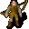

Maevalia¶| Stat | Value |
|---|---|
| Class | ? |
| HP | 0 |
| Max AP | 10 |
| Attack cost | 10 |
| Move cost | 10 |
| Damage | 0 |
| Attack chance | 0 |
| Block chance | 0 |
| Damage resistance | 0 |
| Critical skill | 0 |
| Critical multiplier | 0 |
Found on¶
Quests¶
- Destined for great things: stages 19, 20, 21, 30, 50, 60, 115
- Trial by fire: stages 15, 40, 50
Dialogue (69 lines)
What the dialogue says, exactly as in the game files. Lines are listed once; links jump to the line a choice leads to.
maevalia (silent check: the first matching branch below is taken) — effects: sets stage 19 of Destined for great things
- branch 1 (if reached stage 50 of Trial by fire) → maevalia_q1
- branch 2 (if reached stage 40 of Trial by fire) → maevalia_h5
- branch 3 (if reached stage 15 of Trial by fire) → maevalia_h2
- branch 4 (if reached stage 115 of Destined for great things) → maevalia_d1
- branch 5 (if reached stage 60 of Destined for great things) → maevalia_s1
- branch 6 (if reached stage 50 of Destined for great things) → maevalia_r5
- branch 7 (if reached stage 30 of Destined for great things) → maevalia_r1
- branch 8 (if reached stage 20 of Destined for great things) → maevalia_r0
- branch 9 → maevalia0
maevalia_q1 Maevalia: “Thank you for all your help!”
- “Can I rest here?” → maevalia_d2
maevalia_h5 Maevalia: “You actually killed it?” — effects: sets stage 40 of Trial by fire
- Next → maevalia_h6
maevalia_h2 Maevalia: “Hello again. Did you reach the lower parts of the Charwood mine?”
- “Can I rest here?” → maevalia_d2
- “No, not yet.” → maevalia_d9
- “Yes. I encountered a dragon-like creature in the fiery depths of the mine.” (if reached stage 30 of Trial by fire) → maevalia_h3
maevalia_d1 Maevalia: “It's good to see that Falothen and Fayvara are well. Anything else that I can help you with?”
- “Can I rest here?” → maevalia_d2
- “Where do you think the monsters came from?” → maevalia_d3
- “I talked to Kantya about what happened in the mine.” (if reached stage 10 of Trial by fire) → maevalia_d4
maevalia_s1 Maevalia: “Hello again.”
- Next → maevalia_r7
maevalia_r5 Maevalia: “While I am very happy to hear that Falothen and Fayvara are alive and well, it saddens me to hear that we've lost not only Ayell, but also Morenavia.”
- Next → maevalia_r6
maevalia_r1 Maevalia: “Hello again. Did you find our missing people?”
- “Can you tell me the story about what happened here, again?” → maevalia3
- “What was I supposed to do again?” → maevalia25
- “Who were the people that I was supposed to look for, again?” → maevalia17
- “Yeah, about those people.” → maevalia_r2a
maevalia_r0 Maevalia: “You again.”
- “Can you tell me the story about what happened here, again?” → maevalia3
- “What now?” → maevalia16
maevalia0 Maevalia: “You there! This is no place for children!”
- Next → maevalia1
maevalia_d2 Maevalia: “Absolutely. Pick any bed you want over there.”
maevalia_h6 Maevalia: “You are truly a hero to us.”
- Next → maevalia_h7
maevalia_d9 Maevalia: “Whatever lurks down there, I'm sure it's not happy to get any visitors.”
- “I'll go down into the Charwood mine and investigate.” → maevalia_d10
maevalia_h3 Maevalia: “None of us ever dared to venture that deep.”
- “I haven't killed the creature yet though.” → maevalia_d9
- “Whatever that thing was, it won't bother you any more now that I've killed it. Here is one of the bones from its corpse.” (if hand over 1× Thukuzun bone) → maevalia_h5
maevalia_d3 Maevalia: “I have my guesses. Go talk to Kantya about it. I hear she has the full story, and some interesting theories.”
maevalia_d4 Maevalia: “Good. Did she tell you about that marking on the ground? I saw it myself. Nothing like I've ever seen before.”
- Next → maevalia_d5
maevalia_r7 Maevalia: “Things will never be the same again for us.”
- Next → maevalia_r8
maevalia_r6 Maevalia: “Morenavia was truly a great leader for us. Now, how will we ever be able to find the right paths?”
- Next → maevalia_r7
maevalia3 Maevalia: “We were attacked. We didn't stand a chance, they were too many and we are no fighters.”
- Next → maevalia4
maevalia25 Maevalia: “I would be very grateful for knowing what happened to the people we are missing.”
- Next → maevalia26
maevalia17 Maevalia: “In particular, I'm worried about what happened to Morenavia - our leader. None of us that made it back to this cabin saw what happened to her.”
- Next → maevalia18
maevalia_r2a (silent check: the first matching branch below is taken)
- branch 1 (if reached stage 41 of Destined for great things) → maevalia_r2b
- branch 2 → maevalia_r3
maevalia16 Maevalia: “I sure hope that the people that we are missing are all alive at least.”
- Next → maevalia17
maevalia1 Maevalia: “The Charwood area has become a dangerous place as of late. You should leave at once unless you want to get killed ... or worse.”
maevalia_h7 Maevalia: “Not only did you manage to find our missing people, but you also freed us from the creature that caused all this trouble.”
- Next → maevalia_h8
maevalia_d10 Maevalia: “Thank you.” — effects: sets stage 15 of Trial by fire
maevalia_d5 Maevalia: “I wonder what is down there, in the deeper parts of the mine. I bet that whatever is controlling those monsters is still down there.”
- “I can go look down there if you want.” → maevalia_d7
- “This all sounds too dangerous for me. I better not get involved.” → maevalia_d6
maevalia_r8 Maevalia: “It is at least some comfort to know that we still have Falothen and Fayvara with us.” — effects: sets stage 50 of Destined for great things
- Next → maevalia_r9
maevalia4 Maevalia: “They started pouring out of the mine and the surrounding hills.”
- “Who were?” → maevalia5
maevalia26 Maevalia: “Head up to our mining town of Charwood heights, and look for the missing people.”
- Next → maevalia27
maevalia18 Maevalia: “I sure hope she's still alive. We could use some of her wisdom and leadership right now to guide us.”
- Next → maevalia19
maevalia_r2b (silent check: the first matching branch below is taken)
- branch 1 (if reached stage 42 of Destined for great things) → maevalia_r2c
- branch 2 → maevalia_r3
maevalia_r3 Maevalia: “Yes, what about them?”
- “I'm still trying to find out what happened to all four of them.” → maevalia_r3b
maevalia2 Maevalia: “For your sake, I urge you to leave. While we need all the help we can get, we can't take responsibility for the dangers that has befell our mining town of Charwood.”
- “What has happened here?” → maevalia3
maevalia_h8 Maevalia: “We are forever in your debt. What can we do to ever repay you?”
- “I'm just happy to help.” → maevalia_h9
- “How about some gold for all my troubles?” → maevalia_h10
- “I think that one of your most precious items will suffice as payment.” → maevalia_h11
maevalia_d7 Maevalia: “You would do that for us? Thank you. I don't know what we would do without your help.”
- Next → maevalia_d8
maevalia_d6 Maevalia: “Can't say I blame you. Thank you for the help you've provided so far.”
maevalia_r9 Maevalia: “I hear they are both anxious to talk to you now that they're safe. You should go meet them downstairs in the basement.” — effects: sets stage 60 of Destined for great things
- “OK, I'll go see them in the basement.” → conversation ends
- “I've spoken to them both.” (if reached stage 65 of Destined for great things; reached stage 90 of Destined for great things) → maevalia_r10
maevalia5 Maevalia: “The monsters. Disgusting, foul smelling monsters. Nothing like we've ever seen before.”
- Next → maevalia6
maevalia27 Maevalia: “Please, try to be safe! If you spot any danger, or if those foul monsters are too much for you, don't hesitate to retreat back here.”
- “OK, I'll try to find your missing people.” → maevalia28
maevalia19 Maevalia: “I'm also worried about Falothen, our weapons trainer. As I ran down the hills myself, I thought I heard him call for help.”
- Next → maevalia20
maevalia_r2c (silent check: the first matching branch below is taken)
- branch 1 (if reached stage 43 of Destined for great things) → maevalia_r2d
- branch 2 → maevalia_r3
maevalia_r3b Maevalia: “Thank you for helping us.”
maevalia_h9 Maevalia: “You are truly our hero. Thank you yet again.” — effects: sets stage 50 of Trial by fire
maevalia_h10 Maevalia: “Certainly. Here is what we can spare. Thank you yet again.” — effects: sets stage 50 of Trial by fire, gives Gold coins
maevalia_h11 Maevalia: “After helping us, you still want to deprive us of more things that we cherish?”
- Next → maevalia_h12
maevalia_d8 Maevalia: “Please try to be safe, and be on the lookout for the dangerous monsters that inhabit the mine.”
- Next → maevalia_d9
maevalia_r10 Maevalia: “Good. We are truly grateful for the help that you have provided to us from the Charwood heights.” — effects: sets stage 115 of Destined for great things
- Next → maevalia_d1
maevalia6 Maevalia: “They ransacked our whole mining camp. Even burnt down the wooden carving that Morenavia had created last year.”
- “What did you do?” → maevalia7
maevalia28 Maevalia: “Thank you. The path up to Charwood heights is just east of here.” — effects: sets stage 30 of Destined for great things
maevalia20 Maevalia: “There's also Ayell, our healer, and Fayvara, our armorer. They always stayed together, those two. We don't know what happened to them or where they are.” — effects: sets stage 21 of Destined for great things
- “What are you going to do?” → maevalia21s
- “As I said, I'll try to find out what happened to them.” (if reached stage 30 of Destined for great things) → maevalia28
maevalia_r2d (silent check: the first matching branch below is taken)
- branch 1 (if reached stage 44 of Destined for great things) → maevalia_r4
- branch 2 → maevalia_r3
maevalia_h12 Maevalia: “I guess we have no choice but to agree. Here, take these. They used to belong to my mother.” — effects: sets stage 50 of Trial by fire, gives Worn iron boots, Ring of surehit
maevalia7 Maevalia: “We did the only thing we can, seeing as none of us were equipped to fight. We ran.”
- Next → maevalia8
maevalia21s (silent check: the first matching branch below is taken)
- branch 1 (if reached stage 30 of Destined for great things) → maevalia21a
- branch 2 → maevalia21
maevalia_r4 Maevalia: “Yes, what about them? I saw that Falothen and Fayvara have returned.”
- “Yes, Falothen and Fayvara were alive. Morenavia and Ayell had been killed by the monsters.” → maevalia_r5
maevalia8 Maevalia: “We ran down the mountain, leaving behind our mining settlement of Charwood. Some of us made it here to our former cabin.”
- Next → maevalia9
maevalia21a Maevalia: “With your help, we might at least get somewhere.”
- Next → maevalia25
maevalia21 Maevalia: “I honestly don't know. We've sent out runners to try to find help. So far, none have returned with help.”
- “Maybe I can help?” → maevalia23
- “Tough luck. They're probably dead. You should move on with your lives.” → maevalia22
maevalia9 Maevalia: “The few of us that's left have been able to hold them off from here, at least for now.”
- Next → maevalia10
maevalia23 Maevalia: “Well, I wouldn't want to be responsible for putting you into any trouble.”
- “I can handle myself.” → maevalia24
- “I might be able to sneak by the monsters undetected.” → maevalia24
- “A few puny monsters won't stop me!” → maevalia24
maevalia22 Maevalia: “Yes, I guess so. Thank you for listening to our story.”
maevalia10 Maevalia: “Our mining town up in the Charwood hills is completely overrun, however. All our belongings are back there.”
- Next → maevalia11
maevalia24 Maevalia: “OK. Frankly, I don't know what else we can do. We really need the help.”
- Next → maevalia25
maevalia11 Maevalia: “There are also several of us that haven't made it down the hill. Many of our friends and relatives from the mining town have not been accounted for yet.”
- “What do you think has happened to them?” → maevalia12
maevalia12 Maevalia: “I don't want to think about that. Either they've been killed by the foul monsters, or worse.”
- Next → maevalia13
maevalia13 Maevalia: “You know, we saw one monster carrying around what looked like a net of some sort, instead of weapons like the other ones.”
- Next → maevalia14
maevalia14 Maevalia: “He shoved the other monsters around, and they all seemed to look up to him, like he was some sort of leader.”
- Next → maevalia15
maevalia15 Maevalia: “I don't know what that net was for though. I wonder if he was supposed to capture some of us.” — effects: sets stage 20 of Destined for great things
- “What now?” → maevalia16
- “As I said, I'll try to find out what happened to them.” (if reached stage 30 of Destined for great things) → maevalia28
Community notes¶
Written by players, not generated from game data. Observations: what players notice in-game · Lore: the in-world story · Trivia: real-world facts, references, development history · Theory / speculation: unconfirmed ideas; may just be unfinished content
Observations¶
Nothing here yet. Know something? Add it.
Lore¶
Nothing here yet. Know something? Add it.
Trivia¶
Nothing here yet. Know something? Add it.
Theory / speculation¶
Nothing here yet. Know something? Add it.
Monster ID: maevalia · Data from v0.8.18